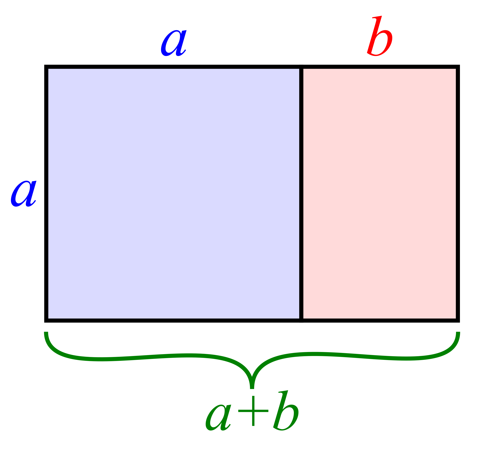

Instructor Notes - Falsification and Scientific Authority
Different Meanings of Theory
In ordinary language we can distinguish between different uses of the world theory. Sometimes theory means speculation or an accounting of a situation. As in: My theory is that Greg talks about Norway because his wife has relatives who live there. At other times the word theory means a set of principles upon which the practice of an activity or practice is based. As in Albert Einstein's famous quote: "In theory, theory and practice are the same. In practice, they are not."
For us, in this class on Science & Authority, I would like us to distinguish - or attempt to discriminate between - the following two usages of the word theory:
- Theory as a lens or conceptual framework through which one may view or think about the world (postcolonial critical theory, individual psychology).
- Theory as a system of related, well-corroborated scientific ideas (Maxwell's theory of electromagnetism, the theory of evolution).
Some caveats:
- I do not meant to suggest that, say, critical race theory is less true, or is less important than, say, insights of biological anthropologists on race and racism. Karl Popper himself thought that valuable insights may arise from `ways of knowing' that are not scientific in his sense of being falsifiable/testable.
- The `system of scientific ideas' category is not meant to imply any particular solution (or personal commitment) to the science and non-science demarcation problem, in spite of the fact that I have chosen examples from the physical and natural sciences.
- These two usages of the word `theory' can be distinguished but not separated. For example, scientific values such as objectivity and disinterestedness may become conceptual frameworks that sideline others who have more at stake. Or looking at it the other way, one might expect that certain scientific ideas that have achieved long-standing consensus would be useful lenses through which to view contemporary problems.
For Your Notebook
- Can you think of theories/ideas that are difficult to place in one category or the other, or examples that seem to be a little of both?
- How about examples that fall into one category for professionally trained and practicing scientist, and the other category for the non-expert, the amateur, and layperson?
In-class Activity - The Golden Ratio
We will read about and discuss intriguing observations related to the golden ratio from When can you trust the experts?: How to tell good science from bad in education by Daniel Willingham.

A golden rectangle with long side a and short side b (shaded red, right) and a square with sides of length a (shaded blue, left) combine to form a similar golden rectangle with long side a + b and short side a. This illustrates the relationship

Further Watching
Why are there so many educators that believe myths about teaching and learning? This question is the focus of Truthiness in Educational Psychology, a webinar by Daniel Willingham.
Further Reading
Willingham, D. T. (2012). When can you trust the experts?: How to tell good science from bad in education. John Wiley & Sons. [SWEM] [Amazon]